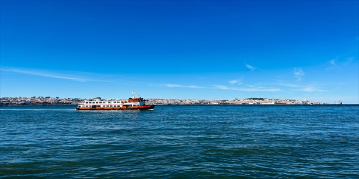
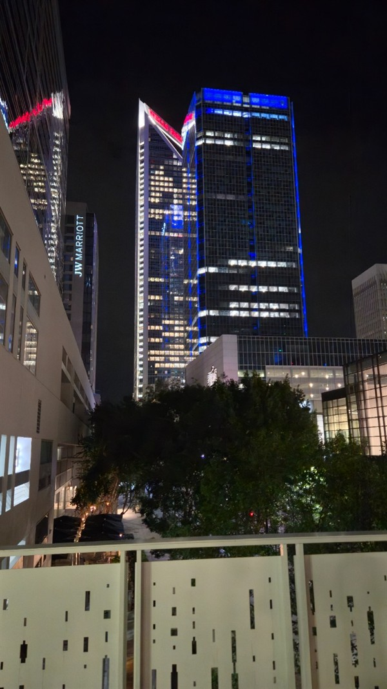
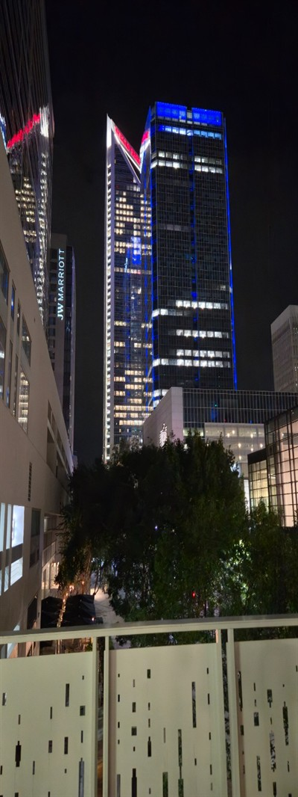

Original Image And Alternate Formats
Open each file to compare the original color JPEG with a GIF conversion, a grayscale JPEG, and a black-and-white JPEG.
This page explores how image formats, file dimensions, and display proportions affect pictures on the web. The ferry photograph is credited to its Pexels photographer; its original and edited versions are compared below.
This colorful Lisbon ferry photograph was taken by Henrique Baldy. His Pexels portfolio also features coastal Portugal imagery, including ocean and beach scenes. The wide blue sky, detailed shoreline, and orange ferry make this photograph useful for comparing color, formats, and proportions. The full-size JPEG is 4032 by 3024 pixels (about 1.81 MB); view its Pexels photo page for source details.
Open each file to compare the original color JPEG with a GIF conversion, a grayscale JPEG, and a black-and-white JPEG.
The source stays at 4032 by 3024 pixels and keeps its 4:3 proportions; CSS displays it at 20% of the available content width.
This separate editor-resized copy is 600 by 450 pixels, preserving the original 4:3 ratio. Its file size is about 0.07 MB, smaller than the 1.81 MB original.
These editor-resized copies intentionally alter the original 600 by 450 proportions. Compare the flattened versions at 600 by 300 and 600 by 201 with the narrowed versions at 400 by 450 and 268 by 450.

The first copy has 600 by 450 pixels. The second was reduced to 150 by 113 pixels, about one quarter of the width and height, then both are enlarged to the same display size.
The original 4032 by 3024 JPEG contains 12,192,768 pixels and uses about 1.81 MB. The editor-sized 600 by 450 copy contains 270,000 pixels and uses about 0.07 MB. CSS display scaling changes neither the original pixel count nor its download size, while reducing both dimensions to about half leaves roughly one quarter of the pixels.
This night photograph shows Charlotte's illuminated skyline, including blue-lit high-rise buildings, the JW Marriott sign, and the surrounding streetscape. The image was provided by Oscar Walczak for this assignment; the photographer is not identified. Its original portrait JPEG is 768 by 1364 pixels (about 0.25 MB). The photo captures the city's architecture and nighttime lighting, making it a useful second image for comparing formats, resizing, and distortion.
Open each file to compare the original color JPEG with a GIF conversion, a grayscale JPEG, and a black-and-white JPEG.
The source stays at 768 by 1364 pixels and keeps its portrait proportions; CSS displays it at 20% of the available content width.
This separate editor-resized copy is 600 by 1066 pixels, keeping almost the same portrait proportions as the original. Its file size is about 0.14 MB, smaller than the 0.25 MB original.

These editor-resized copies intentionally alter the proportions of the 600 by 1066 image. Compare the flattened versions at 600 by 711 and 600 by 474 with the narrowed versions at 400 by 1066 and 268 by 1066.

The first copy has 600 by 1066 pixels. The second was reduced to 150 by 266 pixels, about one quarter of the width and height, then both are enlarged to the same display size.
The original 768 by 1364 JPEG contains 1,047,552 pixels and uses about 0.25 MB. The editor-sized 600 by 1066 copy contains 639,600 pixels and uses about 0.14 MB. CSS display scaling changes neither the original pixel count nor its download size.